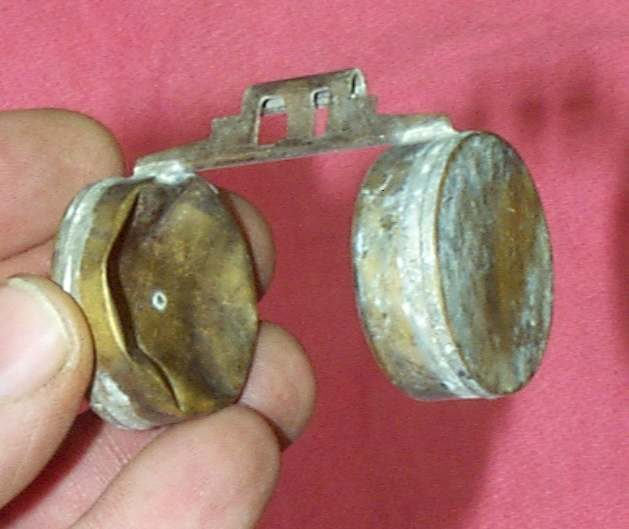

Home mechanic (basic tools) · Time: 2 to 4 h (estimate) (estimate)
A bike that stands for weeks or months goes stale in several ways at once: the battery goes flat, fuel ages and blocks small passages, tyres lose air, brakes and cables stick, and animals may chew wires or nest in the exhaust or air box. Work through these checks before the first start, then ride gently.
Safety
- Work outdoors or in a ventilated place. Old fuel smells strong and its vapour burns.
- Do not start the engine until you know the oil level is correct.
- Test the brakes before you ride out.
Steps
- Look around the bike. Check for chewed wires, nests in the air box or exhaust, rust, puddles of oil or fuel. Clear any blockage. Repair damaged wires: Find a wiring fault.
- Battery. Measure and charge it: Test and charge a 12 V battery. The K-Light 125 manual says to charge a stored battery about every 3 months. A battery left flat for months may be ruined.
- Fuel. Smell the fuel. Old fuel smells sour or like varnish and may be darker. If it is stale, drain the tank and refill with fresh fuel: Drain old or contaminated fuel. See Old or stale fuel in the tank.
- Carburettor bikes. Drain the float bowl through its drain screw into a container. If fresh fuel does not flow, or the engine will not idle after starting, the small jets are probably blocked: Clean the carburettor.
- Fuel-injected bikes. Key ON and listen for the fuel pump to run. K-Light 125: about 3 seconds at key ON. No sound: No buzz from the fuel pump when the key is turned on.
- Rust in the tank. Look inside with a torch. Rust flakes block filters. See Rust or flakes inside the fuel tank.
- Engine oil. Check the level: Check the engine oil level. If the oil is old or milky, change it before riding: Change the engine oil and clean the strainer.
- Spark plug. Remove and check it: Remove, check, gap and fit a spark plug.
- Turn the engine over. With the plug out and the cap fitted to a spark tester, turn the engine a few times with the kickstarter or a short press of the starter. This spreads oil before the engine fires. Refit the plug.
- Tyres. Set pressures cold and look for cracks: Check tyre pressure, Inspect tyres for wear and damage.
- Brakes. Check the levers are firm, the wheels spin freely, and fluid is not dark: Check brake fluid level and condition.
- Chain and cables. Clean and lubricate the chain, check slack, and make sure the throttle snaps shut: Clean and lubricate the chain, Lubricate control cables.
- Start. Use the choke only if the engine is cold and the bike has one. Let it idle until it runs evenly.
- Test ride slowly close to home. Test the brakes at low speed first.
More tips
- Fuel that sits in a carburettor turns to varnish. A small amount of fuel can go bad in a couple of weeks. A full tank can last about a year.
- Drain old fuel and refill. Add fuel stabiliser to the new fuel. See Protect stored fuel with a fuel stabiliser.
- Look for a float crushed by pressure, and for varnish in the float bowl.
Check your work
- Engine starts, idles and revs cleanly. Lights, horn and indicators work.
- Brakes feel firm and do not drag.
If it did not fix the problem
- Engine turns but will not start: Will not start after standing for weeks or months.
Reference values (K-Light 125)
| Item | Value | PDF page |
|---|---|---|
| Charge a stored battery | about every 3 months | 76 |
| Fuel pump run time at key ON | about 3 s | 268 |